Proper configuration of the simulation environment is crucial for accurate and reliable simulation results using Xschem within a Docker container. This section details the necessary considerations regarding path handling and Docker environment variables for a robust simulation process.
4.1.1 Absolute vs. Relative Path Handling
In integrated circuit simulations, particularly involving hierarchical netlisting used by Xschem, careful management of file paths is essential. Absolute paths were chosen to ensure consistency and reliability, as hierarchical structures in netlisting frequently generate new subdirectories during simulation processes. Using absolute paths prevents issues arising from relative paths becoming invalid when directory structures change. Relative paths, although theoretically functional, add complexity and increase the likelihood of path errors during simulations.
Therefore, all simulation paths have been consistently defined using absolute references, guaranteeing stable and predictable netlisting and simulation behavior throughout the project.
4.1.2 Docker Environment Variables Configuration
Within the Docker container environment used for simulations, specific variables require explicit and careful configuration. Key points regarding Docker environment setup include:
DESIGNS Variable:
The core Docker environment variable, $DESIGNS, is configured to reference the directory root/FOSS/designs. Local project paths and symbols are added explicitly to this variable to ensure accurate referencing and inclusion during netlisting.
Docker Root Directory:
The root directory within the Docker environment differs from that of the host operating system, specifically being located at root/headless. This distinction requires careful handling when navigating or setting paths within Docker terminals.
Terminal and Directory Awareness:
Users, especially those working on Windows-based systems, need to distinguish clearly between terminal environments (native Windows, Windows Subsystem for Linux, Docker) as each has fundamentally different root directories and file path conventions. Maintaining clear awareness of these distinctions prevents file referencing errors during simulations.
These explicit configurations and considerations ensure that the Xschem simulation environment operates smoothly, predictably, and accurately throughout the project’s lifecycle.
4.2 Symbol and Netlist Preparation
Accurate preparation of symbols and netlists is fundamental for reliable integrated circuit simulations using Xschem. This section outlines the critical aspects regarding symbol definitions, classifications, netlist generation, and debugging practices to ensure proper functionality and error-free simulations.
4.2.1 Symbol Definitions and Classification (Analog Pins)
All symbols used within this simulation framework must be explicitly classified as analog components. Digital pins or incorrectly labeled pins lead to simulation failures because they are incompatible with the analog circuit simulation environment. Furthermore, each symbol must be explicitly marked as a sub-circuit rather than a primitive component. Mislabeling symbols as primitives can cause errors during hierarchical netlist processing, as the netlister expects defined sub-circuit symbols to correctly navigate the circuit hierarchy.
In this project, all symbols were thoroughly reviewed to confirm they were analog and properly labeled as sub-circuits.
4.2.2 Netlist Generation and Validation
Netlist generation in Xschem follows a hierarchical methodology. Starting from the top schematic, the netlister recursively searches for defined symbols globally. It is essential that symbol paths and local variables are correctly configured and matched explicitly in each hierarchy level. If paths or symbols are misconfigured or missing, the netlister fails to locate necessary components, leading to simulation errors.
Therefore, explicit steps were taken to ensure:
Proper global variable definitions for symbol paths.
Accurate symbol descriptions that match netlist entries.
Verification of netlists after every significant schematic modification.
Effective debugging practices strongly emphasize using plain-text editors to inspect and modify symbol (.sym) and schematic (.scm) files. The files (.spice) making direct text inspection both possible and advisable.
Adopting this debugging approach significantly enhanced the efficiency and accuracy of symbol and netlist preparation processes throughout the simulation.
4.3 OTA Circuit Integration Self-built Five-Transistor OTA
Initially, our group developed our own five-transistor OTA schematic within Xschem to gain practical insights and explore various design parameters.
Figure 4.1 shows the minimalist OTA designed during the early project phase. The circuit follows the five-transistor topology: an NMOS differential pair (M8/M3) converts the input difference into two anti-phase drain currents; a PMOS current mirror (M1/M7) then forces these currents to recombine at the single-ended node v_out, generating voltage gain of roughly \[ g_{m,\text{pair}}\bigl(r_{o,\text{M1}} \parallel r_{o,\text{M7}}\bigr) \] Biasing is supplied by the tail branch (M4→M2), where the external i_bias current is mirrored into M2.
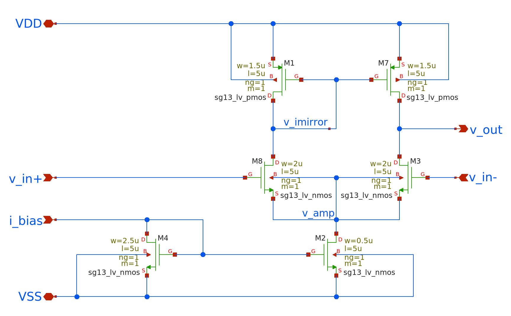
Figure 4.1: Self-built five-transistor OTA schematic.
4.3.1 Validation of Self-built OTA – unity-gain buffer
To verify large-signal behaviour the prototype OTA was configured as a unity-gain follower (Fig. Figure 4.2): v_out is shorted to the inverting input, and the non-inverting input is driven by a single rail-to-rail pulse PULSE(0 1.2 10m 1u 1u 20m 2) The stimulus holds 0 V for 10 ms, rises to 1.2 V in 1 µs, remains high for 20 ms, and then returns to 0 V.
The long two-second period guarantees only one transition inside the 100 ms simulation window.
A 20 µA current source on i_bias establishes the tail current, with supplies at VDD = 1.5 V and VSS = 0 V.
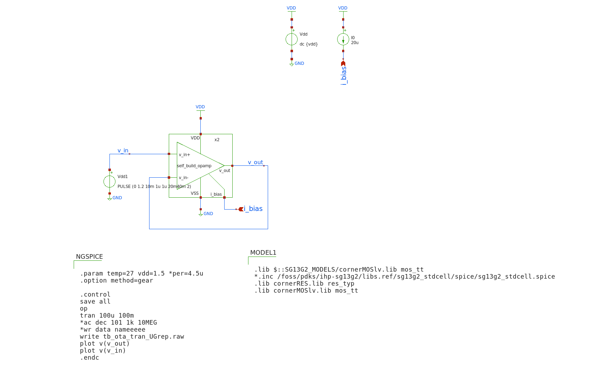
Figure 4.2: Unity-gain test-bench schematic.
The essential NGSpice control block is
.control
save all
tran 100u 100m
*set filetype=ascii
set wr_singlescale
*wrdata tb_ota_tran_UGbuffer.txt v(v_out) v(v_in)
.endc
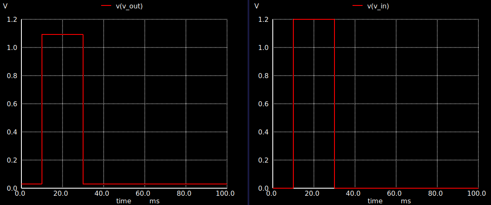
Figure 4.3: Transient waveforms: v_in vs. v_out.
Figure 4.3 plots the resulting traces. The output (left) mirrors the input (right). The output does respond to the input change, it rises up during the pulse window, indicating the OTA is doing something. V_out lags significantly behind v_in and only reaches 1.1 V, while v_in reaches 1.2 V. The OTA as unity-gain buffer should closely track the input with only minimal offset or delay. This indicates: - Too low gain - Insufficient bandwidth - Or incorrect biasing (e.g., not enough current to drive the output stage).
After conducting simulations and analyses, and discussing our results with the professor, we concluded that the five-transistor OTA provided by Prof. Pretel offered superior performance and reliability for our application. Thus, the decision was made to proceed with Prof. Pretl’s well-established OTA design.
4.4 Xschem OTA Description (Five-Transistor OTA by Prof. Pretl)
Prof. Pretl’s five-transistor OTA is an optimized implementation, specifically tailored for efficient analog circuit integration using the SG13G2 CMOS process. His design, depicted in Figure 4.4, maintains simplicity while enhancing performance through thoughtful sizing and layout practices. This OTA employs a standard architecture comprising an NMOS differential input pair, a tail current source transistor, and a PMOS current mirror load. The input differential voltage is transformed by the differential pair into two opposite-phase currents, recombined by the PMOS mirror at the single-ended output node.
A dedicated transistor sets a stable bias current, ensuring predictable and robust OTA performance over varying operating conditions. Channel lengths and widths are carefully chosen to balance between adequate intrinsic gain, bandwidth, and noise characteristics. Particularly, the transistor sizes follow good IC design practices, with lengths exceeding the minimum dimensions to suppress short-channel effects and flicker noise. Bulk connections are properly handled to avoid body effects, typically by tying bulks directly to their corresponding source terminals. The accompanying layout from Prof. Pretl ( Figure 4.4) illustrates thoughtful device placement and symmetry, reducing mismatches and parasitic coupling. Furthermore, multiple finger transistors are employed effectively to optimize layout density and performance, adhering to industry-standard guidelines.
Simulations and measured data presented by Prof. Pretl validate this design as a stable, efficient, and high-performance option for analog signal processing. It exhibits superior gain and bandwidth compared to simpler OTA configurations, making it suitable for more demanding applications in integrated analog and mixed-signal circuits. Due to these advantages, our group adopted this OTA as the baseline for subsequent design and integration phases in our project.
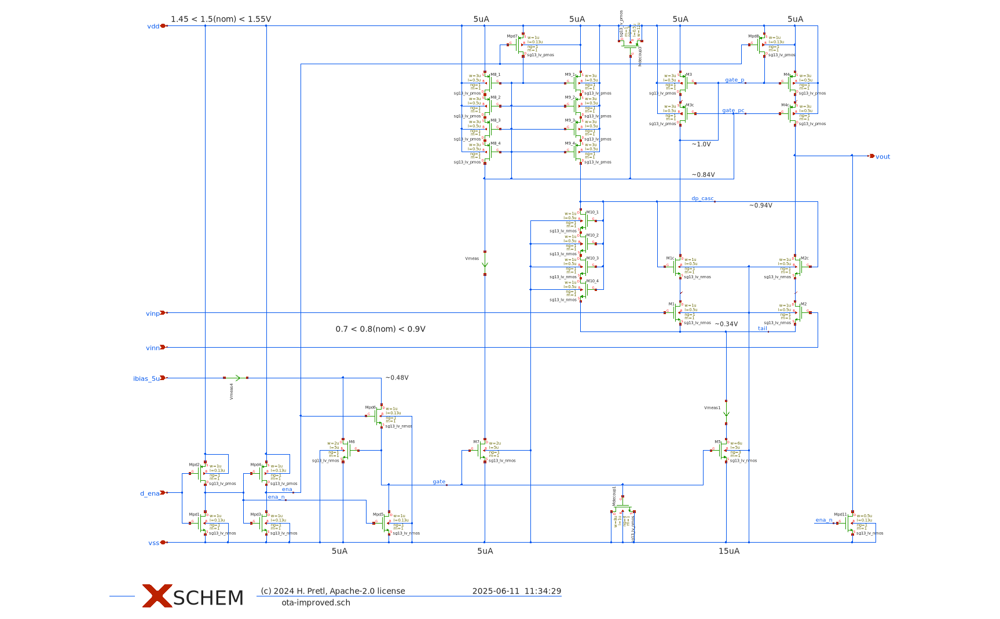
Figure 4.4: OTA schematic.
4.5 Sizing and Simulation
Proper transistor sizing is critical when designing an OTA for use in a biquad filter, where gain, linearity, and bandwidth all depend heavily on MOSFET dimensions. To guide the sizing process, we adopt the \(g_m / I_D\) methodology, which provides a systematic trade-off between speed, power efficiency, and voltage headroom.
After experimenting with various combinations of transistor widths and lengths in simulation, we found that many trade-offs emerged between gain, speed, and voltage headroom—particularly for the cascode devices. Ultimately, we followed Prof. Pretl’s recommendations, assigning a reduced channel length of \(L = 0.5u\) to the input differential pair and cascode devices (\(M_{1/1C}\), \(M_{2/2C}\), \(M_{3/3C}\), \(M_{4/4C}\)) to maximize speed and transconductance. Meanwhile, the tail current source transistors (\(M_5\), \(M_6\)) were given a longer channel length of \(L = 5u\) to improve matching, suppress flicker noise, and ensure robust common-mode rejection.
A constant sizing point of \(g_m / I_D = 13\) was applied across all devices, which offered a good balance between transconductance efficiency and voltage headroom. This choice ensured that even with stacked transistors, all devices remained in saturation across the intended signal swing and supply range.
Simulation results based on this sizing show that the OTA achieves an open-loop gain \(A_0 > 43\,dB\), satisfying key performance goals such as bandwidth and linear range for biquad operation. These results confirm that the selected sizing strategy works reliably within the supply voltage limits of the SG13G2 process, and is well-suited for analog signal processing tasks requiring accurate and programmable transconductance.
4.5.1 Small-Signal Frequency Response
To evaluate the frequency-domain behavior of the improved OTA, an AC simulation was performed using a differential testbench. The resulting magnitude response, shown in Figure 4.5, displays the classic characteristics of a low-pass amplifier.
The curve remains flat (0 dB) throughout the low-frequency range, indicating that the OTA maintains constant gain for small-signal inputs up to approximately \(f_{-3\text{dB}} \approx 80\,\text{MHz}\). This –3 dB point marks the unity-gain bandwidth of the amplifier in this configuration. Beyond this corner frequency, the magnitude begins to drop at a rate close to –20 dB/decade, indicating a dominant single-pole roll-off.
The high-frequency attenuation begins smoothly, confirming that the amplifier is well-compensated and free from peaking or signs of instability. The steep slope observed beyond 100 MHz suggests the presence of additional parasitic poles but no indication of underdamped behavior or excessive phase lag. This roll-off behavior is consistent with a cascode-loaded OTA, where the increased output impedance pushes the dominant pole to higher frequencies.
Overall, the OTA demonstrates a strong small-signal frequency response, offering sufficient gain-bandwidth product for its intended use in biquad filters and other analog signal processing tasks.
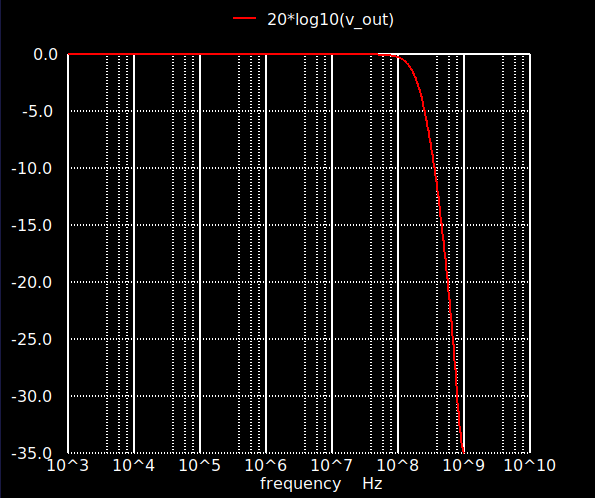
Figure 4.5: AC magnitude response of the improved OTA.
4.5.2 Large-Signal Transient Response
Figure 4.6 shows the transient simulation result of the improved OTA in response to a step input signal.
The red trace (\(v_\text{ena}\)) represents the input voltage. It exhibits a sharp transition from 0 V to approximately 1.5 V at the beginning of the simulation and remains constant for the rest of the time window.
The blue trace (\(v_\text{out}\)) shows the corresponding OTA output voltage. Immediately after the input step, the output rises to approximately 0.8 V and holds steady throughout the entire duration of the simulation (15 µs). There is no visible overshoot, ringing, or delay in the output transition, and the response appears stable and monotonic.
This result confirms that the OTA produces a constant output voltage in response to a step input under the simulated conditions. The flat and settled output also suggests that the biasing and feedback configuration were correctly established.
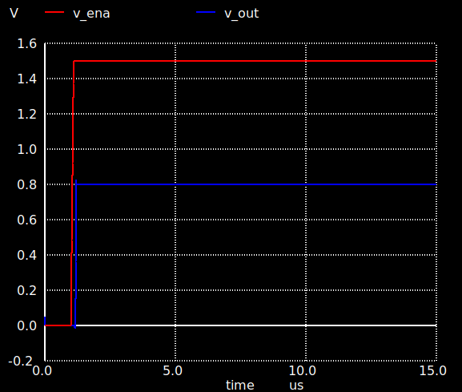
Figure 4.6: Transient response of the improved OTA to a step input.
4.6 gm‑C Biquad Prototype – Concept and Implementation
After initially developing our own basic five-transistor OTA to explore the design flow and simulation process in Xschem, we proceeded to study and simulate several OTA topologies provided by Prof. Pretl. This included hands-on experimentation with his differential architectures and cascode-enhanced designs, allowing us to deepen our understanding of performance trade-offs and layout considerations in analog IC design.
In this final design step, we returned to building our own OTA, this time using an improved architecture specifically tailored for integration into a gm‑C biquad filter. The goal was to implement a fully differential, tunable low-pass filter using transconductors and capacitors only. By controlling the OTA bias current, we aimed to achieve continuous tuning of the filter’s cut-off frequency without modifying passive components.
The following section presents the concept, schematic implementation, and simulation-based validation of this gm‑C biquad prototype. It marks the transition from isolated OTA design toward the realization of a complete analog signal processing block.
4.6.1 OTA Implementation for gm‑C Biquad
The OTA used in our gm‑C biquad implementation is structurally inspired by the differential architecture shown in Figure 3.15(c) of Baker (2010) analog design textbook. As illustrated in Figure 4.7, the OTA consists of a fully differential input stage, a folded current-mirror load, and a programmable tail current source, making it well-suited for use as a transconductor in gm‑C filters.
The core of the OTA includes a differential NMOS input pair (\(M_7\), \(M_8\)), which converts the input voltage difference \((v_\text{inp} - v_\text{inn})\) into a differential current. These currents are then mirrored and steered by the PMOS current mirror loads (\(M_2\) through \(M_6\)) into the output branches (\(v_\text{outp}\) and \(v_\text{outn}\)). The top mirrors are folded downward into the output stage, creating high output impedance and helping increase gain—similar to the folded-cascode concept seen in the reference OTA.
The output common-mode voltage is stabilized using a biasing network composed of transistors \(M_1\) and \(M_{11}\)–\(M_{12}\), which fix the gate voltages for proper operation. The tail current is generated through the NMOS branch (\(M_9\), \(M_{10}\)), which is set by the external \(i_\text{bias}\) node and determines the OTA’s transconductance via:
The structure is deliberately symmetric to preserve linearity and minimize even-order distortion, and the design reflects the need for balanced performance across process corners in gm‑C filter applications. Unlike the simplified example in Baker (2010), which omits layout- and bias-stabilizing elements for clarity, our implementation explicitly includes bias regulation to improve practical robustness and simulation convergence.
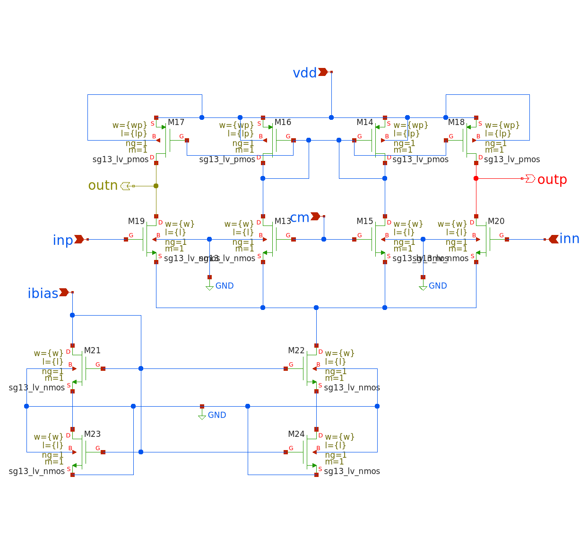
Figure 4.7: Implemented OTA schematic used for gm‑C biquad design.
4.6.2 gm‑C Biquad Schematic in Xschem
Figure 4.8 shows the complete schematic of the gm‑C biquad filter implemented in Xschem. The design consists of four OTA instances, each configured in a differential topology and biased with a shared tail current of 100 µA via the global ibias net. The power supply is set to 1.5 V, and all OTAs operate with a common-mode input reference of 0.75 V via the vcm node.
The circuit follows the classical gm‑C biquad topology introduced earlier. It features two cascaded integrator stages formed by OTA–capacitor pairs, followed by additional OTA blocks for feedforward and feedback terms. All OTAs use the same internal schematic (ota_gm_100u) and are referenced symmetrically.
Each OTA drives or is loaded by 10 pF metal-insulator-metal (MIM) capacitors (\(C_1\)–\(C_6\)), arranged in 1:2 ratios where necessary to match the theoretical filter structure (e.g., \(C_1\) and \(C_2\)). Differential symmetry is preserved throughout the network using mirrored signal paths and balanced layout routing.
The input signals vinp and vinn are provided by AC voltage sources with 0.5 V DC offset and 0.5 V amplitude. The output is taken differentially as voutp and voutn, and the simulation computes their difference using:
let vod = v(outp) - v(outn)
plot db(v(vod))
This differential output is evaluated across a frequency sweep from 1 kHz to 100 MHz using the NGSpice .ac dec command with 100 points per decade:
ac dec 100 1k 100MEG
The NGSpice block at the top of the schematic (see Figure 4.8) includes the device model definitions, the simulation temperature (set to 27°C), and references to the SG13G2 PDK libraries. Parameterized values for transistor dimensions are declared at the beginning to allow flexibility when tuning device behavior:
.param lp="X"u wp="X"u l="X"u w="X"u
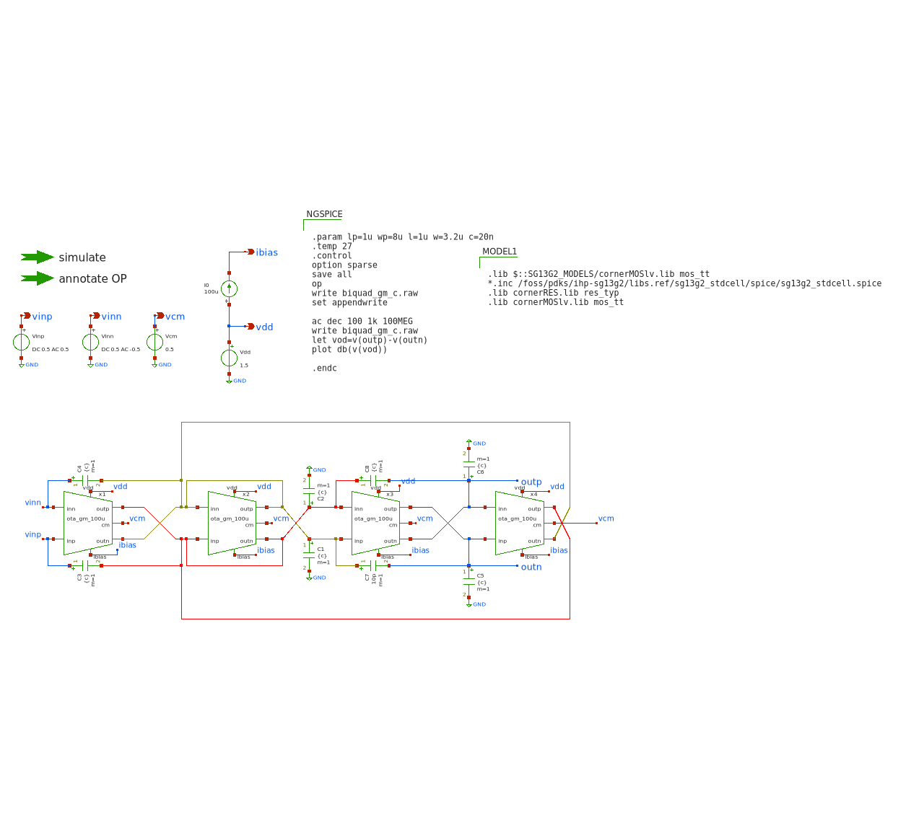
Figure 4.8: gm‑C biquad design.
This modular approach to simulation setup enhances reproducibility and simplifies design iterations. The OTA instances are invoked via their corresponding symbol files, ensuring consistency between simulation and schematic representation.
Overall, this gm‑C biquad schematic represents a practical and scalable implementation of a continuous-time filter using custom OTA blocks. The approach aligns well with standard analog IC design methodology and is suitable for integration in high-speed signal processing chains.
4.6.3 Sizing the 1 kHz Low-Pass gm-C Biquad to the Baker Topology
Figure 4.8 reproduces the fully differential gm-C biquad proposed by Baker (2010). In this architecture, the behavior of the filter is governed by six small-signal parameters:
These expressions relate the two integrator stages \(\bigl(g_{m1}, C_{1,2}\bigr)\) and \(\bigl(g_{m3}, C_{3,4}\bigr)\) to the feed-forward transconductors \(g_{m2}\) and \(g_{m4}\). For a low-pass realisation, we adopt the convenient symmetry:
so that both integrator poles coincide. Under this symmetry, the pole frequency reduces to
\[
f_0 = \frac{g_m}{4\pi C},
\]
where the factor of 4 arises from the doubled \(2C\) plates used at each integrator output in the schematic.
To meet the low-frequency target of 1 kHz, we must carefully select appropriate values for \(g_m\) and \(C\), while respecting the OTA bias constraint. Each OTA operates with a fixed tail current of \(I_{\text{tail}} = 100\;\mu\text{A}\), resulting in \(I_D = 50\;\mu\text{A}\) per branch. To ensure good noise performance and strong inversion operation, we target a transconductance efficiency of approximately
As each integrator output is loaded with \(2C\), the effective capacitance at each output node is approximately 40 nF.
Area note: At a typical SG13G2 MIM density of \(2\,\text{fF}/\mu\text{m}^2\), a 20 nF capacitor requires roughly 10 mm² of silicon area. This is large for an on-chip design and motivates the use of stacked MIM structures or off-chip MLCCs for prototyping.
To realise this \(g_m\) in a compact layout, we choose a MOSFET overdrive voltage of \(V_{\text{OV}} = 0.40\,V\) and assume a mobility-capacitance product of \(\mu_n C_{\text{ox}} \approx 200\,\mu\text{A}/\text{V}^2\). The required transistor aspect ratio then becomes:
\(W/L \approx 3\), yielding \(g_m \approx 0.25\) mS
PMOS (all)
1 µm
8 µm
Width ×2.5 for hole mobility compensation
Tail pair
5 µm
3.2 µm
Long \(L\) increases \(r_o\) and suppresses \(1/f\) noise
In summary, this sizing strategy realises a 1 kHz low-pass response while respecting the 100 µA tail bias in theory. The chosen transistor dimensions enable consistent \(g_m\) across all OTA branches. Although the large on-chip capacitors pose layout challenges, they can be addressed using multilayer MIM stacks or external capacitors during prototyping. The unified NMOS/PMOS geometries also facilitate efficient common-centroid layout across the four OTAs that form the biquad filter.
4.7 GM/ID Methodology
One of the first questions we have to ask in IC design is how small or how large we can design the MOSFETs we’re using in the circuits. MOSFETs can be used in saturation mode or in the triode state (as well as in cut-off but this is not relevant for us). When the FET is in saturation the drain current \(I_{D}\) is controlled primarily by the gate-source voltage \(V_{GS}\). In this case the drain-source voltage has a smaller impact on the drain current. For the Transistor to work in saturation the drain-source terminals need to be driven with a voltage high enough so this “saturates” the FET and the highest drain-current is achieved.
On the other hand if the voltage applied across the drain-source contacts (on a NMOS for example) is relatively low (compared to the voltage for saturation), the FET will operate in the so called triode mode. In triode mode the drain-source voltage \(V_{DS}\) has a fundamentally larger impact on the drain current then in the saturation mode. (H. Pretl and Michael Koefinger 2025)
One Methodology to solve the question we asked at the beginning of this chapter is the \(\frac{gm}{I_{D}}\) methodology which we will introduce in a moment. There are basically three MOSFET characteristics directly describing the behaviour of it:
\(\frac{g_m}{I_D}\) : Transconductance Efficiency
\(\frac{\omega_{T}}{f_T}\) : Transit frequency
\(\frac{g_m}{g_{ds}}\) : Intrinsic Gain
To understand the first characteristic for our FETs we have to take a look at the different operating points which depend on the applied voltages. Whenever we apply voltages to a FET in order to control a specific drain current \(I_{D}\), we can operate the FET in either weak inversion, strong inversion or moderate inversion. This behaviour is controlled by the Overdrive Voltage \(V_{OV}\) which is defined as the difference between the gate-source voltage and the threshold voltage. To note this small point the drain-current is controlled by the voltage between gate and source. Whenever an nmos is not being used as a low-side switch or amplifier or the pmos is being used as a low-side component problems can arise. Since we are using FETs in our switched capacitor integrator for example this is quite important.
\[
V_{OV} = V_{GS} - V_{TH}
\]
We have to keep in mind that the threshold voltage isn’t a magical number that can be applied to every MOSFET, it rather depends on the geometry (with W and L for example) and other factors. For the example nmos given in the Analog Circuit Design IHP SG13G2 Devices Table by Professor Pretl, the threshold voltage is 0.5V. Therefore the overdrive voltage describes how “much” the gate-source voltage is above the threshold of the FET. Depending on this overdrive voltage the circuit/ic designer can apply different \(\frac{g_{M}}{I_{D}}\) values with the unit [\(\frac{1}{V}\)]. This unit is derived in the following way:
and \(I_{D}\) having the unit Ampere [A] and the voltage \(V_{GS}\) we get:
\[
\frac{\frac{A}{V}}{A} = \frac{1}{V}
\]
Before we continue with the \(\frac{g_{M}}{I_{D}}\) method we want to note that there also is the square-law model with which circuit designers can design MOSFET circuits. This model is usually applicable for PCB circuits and takes the situation into account where the MOSFET is driven in the stong inversion state. The square-law model is being applied assuming that the FET is operating in the “linear” or “triode” mode, however on nanometer scale FETs (down to 130 nm with the IHP-SG13G2 PDK) this model doesn’t give us precise solutions anymore. Many effects like parasitic capacitances alter the operational behaviour of the FET and lead to the square-law model deviating afar from the real-world behaviour in many situations (Alan Doolittle 2025).
The square-model drain-current behavior is being described by the following formula:
with \(N_A\) being the acceptor doping concentration and \(n_i\) being the intrinsic carrier concentration. The term 2 \(\phi_F\) corresponds to the surface potential required to achieve strong inversion.
To illustrate the problems of the square-law model when designing MOSFET circuits at nanometer scale we will look at some graphs visualizing it’s limitation. First of all let’s look at the formulas for the square-law when we want to achieve more performance with our FETs:
high transconductance (at same drain-current \(I_D\)) without higher output conductance.
The square-law model completely fails in these cases when the MOSFET is not operation in strong inversion. In moderate and weak inversion we are forced to use a different mathmatical model , and the \(\frac{g_M}{I_D}\) method is a really good starting point (Ross Walker 2017).
The following figures will show the deviation between square-law and measurements as well as the \(\frac{g_M}{I_D}\) methodology:
So first of all when we use \(g_M\) and \(I_D\) we specify that for a specific drain-current we get a specific transconductance, for example with a \(\frac{g_M}{I_D}\) of 10 S/A we get 10 \(\mu\) S per 1 \(\mu\) A of bias current. And depending on how “much” the transistor is operating above it’s threshold voltage \(V_{th}\) (basically the Overdrive Voltage \(V_{OV}\) ) you get different inversion levels. From weak inveresions for low overdrive voltages to moderate inversion when operating at approximately \(V_{OV}\) = \(V_{th}\) to high inversion when \(V_{OV}\) > \(V_{th}\).
With the square-law value for transconductance efficiency we completely deviate with that approximation in weak and moderate inversion:
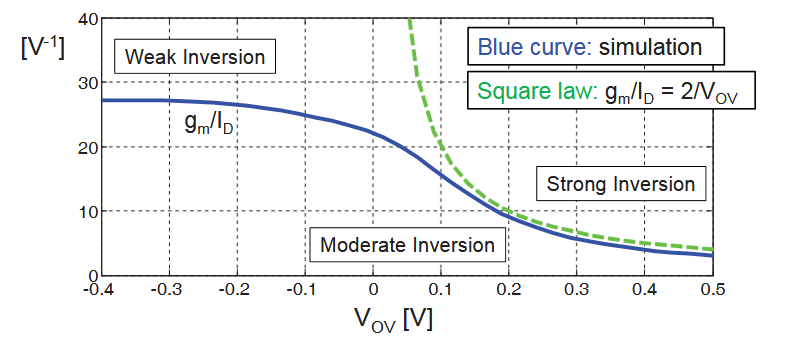
Figure 4.9: Inversion level vs. Overdrive Voltage (Ross Walker 2017)
Another deviation from square-law to real MOSFET behaviour can be seen when we increase the gate-source voltage of the FET and measure the drain-current. According to square-law formual for the drain-current the current should just increase to the square with increasing gate-source voltage. But by taking the square of the drain-current and increasing \(V_{GS}\) we can see that the drain-current does not magically start flowing above the threshold-voltage and also the behaviour is also not linear (quadratically when not taking the square of the current):
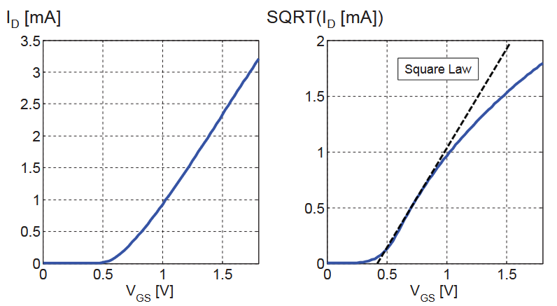
Figure 4.10: Drain Current over Gate-Source Voltage, Simulation vs. square-law (Ross Walker 2017)
This simulation is done for a n-channel MOSFET with a drain-source voltage of 1.8 V and a size of L = 180 nm and W = 5 \(\mu\)m.
The drain-current behaviour at sub-threshold gate voltages is completely inaccurate for the square-law too, and the following graph visualizes the limitation of the square-law at this point again:
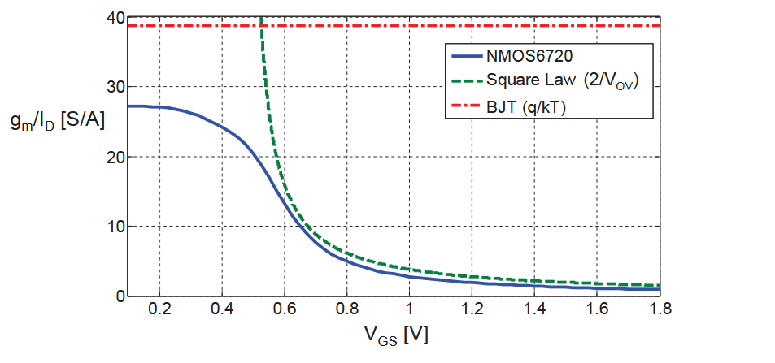
Figure 4.11: Drain Current over Gate-Source Voltage, comparison between an nmos, a bjt and the square-law (Ross Walker 2017)
These three examples show that the approach using square-law to size MOSFETs is not sufficient when the transistor is operating in weak or moderate inversion and when driving the FET (nmos for example) with a low gate-source (or overdrive-) voltage. To cite Mr. Walker on this topic: “This means that the square law equation (which assumes 100% drift current) does not work unless the gate overdrive is several \(\frac{kT}{q}\), (Ross Walker 2017)”.
To conclude this, we can keep in mind that there is no simple formula that can describe the drain-current behaviour in all situations and be universally used. So using the \(\frac{g_m}{I_D}\) methodology is the way to go in our project.
Now with that out of the way we can design our circuits using the \(\frac{g_m}{I_D}\) methodology. The main properties of our MOSFETs we can manipulate in xschem are the lenght of the channel L, the width W and the bias current \(I_D\). The common way to use this method is to first characterize nmos and pmos field effect transistors and then use this data to design the circuits. In the chapter “MOSFET characterization Testbench” chapter in (H. Pretl and Michael Koefinger 2025) we can see how the values for the \(\frac{g_m}{I_D}\) methodology are being simulated for later use.
The lenght of the MOSFET channel also has a large influence on it’s frequency characteristic as it can be seen in this simulation:
The operating areas of interest for us are the saturation region (when using the FET as an amplifier for example) and the region when the FET is being used to “just” work as a switch. With setting \(V_{DS}\) to \(\frac{V_{DD}}{2}\) we keep the FET in saturation. Reminding ourselves again that with larger \(g_M\) we have more “gain” and with a smaller \(I_D\) we have higher efficiency we try to hit the sweetspot between size (as every square milimeter has it’s cost) and current consumption (if we have wearable battery powered devices for example). Keeping also in mind that temperature has a large effect we cannot use arbitratily large drain currents.
Following plot visualizes the dependancy of \(\frac{g_M}{I_D}\) to the gate-source voltage and shows the transit frequency behaviour too:
Device sizing is a fundamental step in analog circuit design.Proper sizing ensures the desired trade-off between gain, bandwidth, power consumption, and linearity. A structured approach to sizing guarantees that the transistors operate in their optimal region—typically strong inversion and saturation for analog applications.
This section presents a basic OTA sizing methodology based on the work of Prepl, whose notebook is publicly available at GitHub: analog-circuit-design.
The notebook demonstrates a Python-based framework for calculating initial transistor dimensions in a basic OTA. Below is an explanation of the key steps, equations, and important code snippets from the sizing method, along with visual aids to clarify the process.
The sizing workflow follows these general steps:
Define process parameters.
Specify bias currents and overdrive voltages.
Calculate width-to-length ratios (W/L) for each transistor.
Determine transconductance, output resistance, and gain.
Evaluate key performance metrics like slew rate and gain-bandwidth product.
At the beginning of the notebook, fundamental technology parameters are defined, including supply voltages, threshold voltages, mobility, and channel-length modulation factors for NMOS and PMOS transistors.
Code
# Technology and model parametersVDD =1.8# Supply voltage [V]VTHN =0.4# NMOS threshold voltage [V]VTHP =-0.4# PMOS threshold voltage [V]mu_n_Cox =200e-6# NMOS process transconductance parameter [A/V^2]mu_p_Cox =100e-6# PMOS process transconductance parameter [A/V^2]lambda_n =0.1# Channel length modulation NMOS [1/V]lambda_p =0.1# Channel length modulation PMOS [1/V]
These parameters are critical for calculating transistor drain current in saturation:
The differential pair (M1 and M2) defines the input transconductance of the OTA. Sizing begins by selecting bias current and overdrive voltage (V\(_{OV}\)):
Code
# Bias current for each NMOS transistorID1 =100e-6# [A]# Overdrive voltage for M1 and M2VOV1 =0.2# [V]# Calculate W/L ratio for M1 and M2WL1 =2* ID1 / (mu_n_Cox * VOV1**2)print(f"W/L for M1 and M2: {WL1:.2f}")
W/L for M1 and M2: 25.00
In this example: - Bias current (ID1) is 100 µA per transistor. - Overdrive voltage (VOV1) is 0.2 V. - Calculated W/L ensures M1 and M2 operate in saturation with desired transconductance.
The tail current source (M5) provides total bias current to the differential pair:
Code
# Tail current source sizing (M5)ID5 =200e-6# Total bias current [A]VOV5 =0.2# Overdrive voltage [V]WL5 =2* ID5 / (mu_n_Cox * VOV5**2)print(f"W/L for M5: {WL5:.2f}")
W/L for M5: 50.00
M5 carries the combined current of M1 and M2, typically twice ID1.
PMOS current mirrors (M3 and M4) act as active loads for the differential pair, impacting gain and output resistance:
Code
# Load transistors sizing (M3 and M4)ID3 =100e-6# [A]VOV3 =0.2# [V]WL3 =2* ID3 / (mu_p_Cox * VOV3**2)print(f"W/L for M3 and M4: {WL3:.2f}")
W/L for M3 and M4: 50.00
Lowering overdrive voltage (V\(_{OV3}\)) increases output resistance, improving OTA voltage gain.
Once W/L ratios are calculated, device transconductance (g\(_m\)) and output resistance (r\(_o\)) are derived:
Slew Rate: 2.00e+08 V/s
Gain Bandwidth Product: 7.96e+07 Hz
Slew Rate (SR): OTA’s ability to respond to large signals.
Gain Bandwidth Product (GBW): Small-signal frequency response.
The presented methodology offers a systematic, reproducible approach to OTA design. Starting with hand calculations and validating through simulation helps designers optimize OTA performance while balancing speed, power, and gain. This lays groundwork for addressing noise, mismatch, and layout parasitics. Further information is publicly available at GitHub: analog-circuit-design.
Silveira, F., D. Flandre, and P. G. A. Jespers. 1996. “A Gm/Id Based Methodology for the Design of CMOS Analog Circuits and Its Application to the Synthesis of a Silicon-on-Insulator Micropower OTA.”IEEE Journal of Solid-State Circuits 31 (9): 1314–19. https://doi.org/10.1109/4.535416.